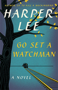

Fiction
Go Set a Watchman by Harper Lee
From Harper Lee comes a landmark new novel set two decades after her beloved Pulitzer Prize-winning masterpiece, To Kill a Mockingbird.
Maycomb, Alabama. Twenty-six-year-old Jean Louise Finch "Scout" returns home from New York City to visit her aging father, Atticus. Set against the backdrop of the civil rights tensions and political turmoil that were transforming the South, Jean Louise homecoming turns bittersweet when she learns disturbing truths about her close-knit family, the town and the people dearest to her. Memories from her childhood flood back, and her values and assumptions are thrown into doubt. Featuring many of the iconic characters from To Kill a Mockingbird, Go Set a Watchman perfectly captures a young woman, and a world, in a painful yet necessary transition out of the illusions of the past - a journey that can be guided only by conscience.